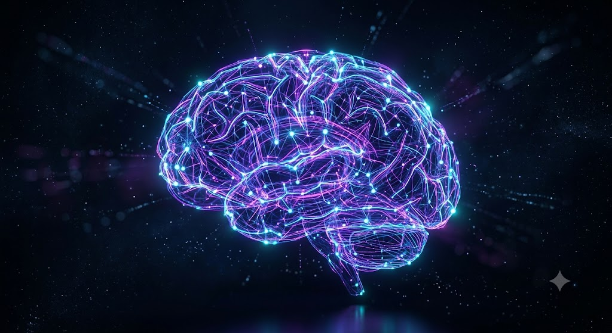

Primary CTA: Get Started Today Secondary CTA: Schedule a Demo Key Value Propositions Scalable Infrastructure Engineered to grow alongside your business, our AI architectures seamlessly handle increasing data loads without compromising speed or reliability. Enterprise-Grade Security Data protection and compliance are woven into every line of code, ensuring your proprietary information remains confidential and secure. Measurable ROI We focus on practical applications that reduce operational costs, increase speed to market, and generate clear financial return. Features & Capabilities Overview Autonomous Task Management: Automate manual data entry, processing, and routing with intelligent workflows. Real-Time Data Analytics: Extract immediate actionable insights from unstructured datasets as they stream in. Adaptive Learning Systems: Deploy models that continuously improve as they interact with new data and edge cases. Testimonials & Social Proof "Implementing their custom NLP models transformed how we handle customer support. Response times dropped by 65% in the first quarter alone."

— Sarah Jenkins, Chief Technology Officer